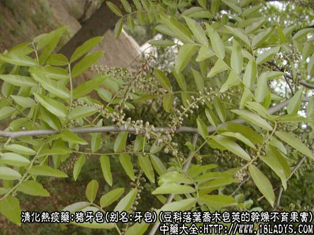
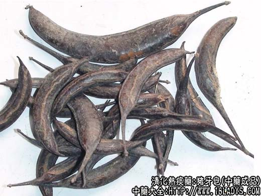
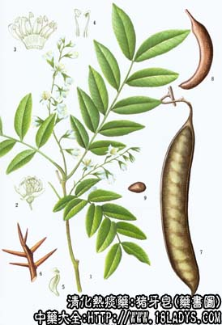

本品为常用中药，《神农本草经》列为下品。
别名：牙皂、小牙皂、小皂角。
来源：为豆科植物落叶乔木皂荚的干燥不育果实。栽培或野生。
产地：主产于山东、河南、四川、云南、贵州、湖北，此外广西、甘肃等省亦产。
性状鉴别：荚果扁圆条形，呈新月弯曲。全长5～12厘米，宽5～12毫米，厚2～10毫米。形如野猪獠牙，故名“猪牙皂”。顶端尖如鸟喙，基部有细长的子房柄，长1～3厘米。外果皮革质略光滑，或有细纵裂纹，棕红色或棕黑色。质坚脆易折断。中果皮纤维性，断面棕黄色，瓤心灰绿色，显疏松，内无种子。粉尘闻之使人发嚏。气微，味微苦辛而麻舌。
以荚果肥厚，皮光滑棕红色，内碴黄绿色者为佳。
主要成分：含三萜皂甙、鞣质。
药理作用：开窍、化痰、散风。现代研究证实有下列作用。
1、抗菌。在试管内对大肠杆菌、伤寒杆菌、宋内氏痢疾杆菌等有抑制作用。
2、抗真菌。在试管内对堇色毛癣菌等皮肤真菌有抑制作用。
3、杀阴道滴虫。其皂甙能使阴道滴虫胞浆膜变薄、胞浆暴露而致虫体溃灭。
炮制：捣碎，生用。
性味：辛、咸、温，有小毒。
归经：入肝、大肠经。
功能：通窍、祛痰，通大便。
主治：中风口噤，咽喉肿痛，痰喘胀满等症。研粉吹鼻取嚏，醋调敷痈肿。
临床应用：1、用于逐痰开窍，此为牙皂现代的主要用途，入通关散复方中用，取其有刺鼻而通窍的作用，吹鼻取嚏，治中风牙关紧闭、不省人事，亦可用稀涎散。
2、用于通便，配细辛、蜂蜜等制成通便条、塞入肛门，通过局部刺激而增强肠蠕动，促进排便，治便秘和轻症动力性肠梗阻。
用量：0.9～1.5g，入丸散剂外用，如入汤剂内服，刺激性极大，故仅能用最小量（不超过0.3～0.6g），如作散剂冲服，不超过0.15g。
处方举例：
通关散《古验方》：牙皂、细辛各等份，共研极细末，吹入鼻中，引嚏苏醒。
稀涎散《圣济总录》：牙皂、明矾各等份，研末，温水调灌取吐，治中风牙关紧闭实证。
通便条：皂角12g、细辛12g，研末，加蜂蜜120g，调匀，趁热制成栓子（用玻璃纸或聚乙烯薄膜包装），每次1条，塞入肛门。
附：皂角刺：为皂角树茎枝的锐利棘刺。味辛，性温。有散肿、解毒、祛风作用。用于治痈疡，促使其消散或早日溃破，内服及外敷均可。内服常派防风、黄芪、白蒺藜、蝉衣，又可配银花、炙山甲等，方如消疮饮。外用配万年青等捣烂外敷。